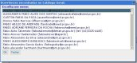

Manual completo do ExpressoMail
Manual completo do ExpressoMail
O ExpressoMail é o módulo de correio do Expresso. Através dele você pode acessar, gerenciar e manipular suas mensagens. Ao entrar no módulo, é exibida a sua Caixa de Entrada, com menus principal e de pastas à sua esquerda. As principais funcionalidades do módulo serão descritas a seguir:
- Ao abrir uma mensagem ou redigir uma nova mensagem, será aberta uma aba ao lado da Caixa de Entrada. Isto permite que várias mensagens sejam abertas ao mesmo tempo, simultaneamente à escrita de uma nova mensagem, por exemplo.
- Para mover uma mensagem de uma pasta para outra, basta selecioná-la (clicando no quadrado à esquerda da mensagem), clicarsobre a mesma e arrastar para a pasta desejada. Para mover várias ao mesmo tempo, o processo é análogo.
- Ao abrir uma mensagem, apenas as opções de utilização mais usadas aparecem imediatamente.

Para visualizar mais opções, clique em "Opções" e aparecerá uma nova barra com mais opções e com o cabeçalho da mensagem.
Clique na imagem para ampliá-la. -
Várias funcionalidades do ExpressoMail podem ser alcançadas clicando com o botão direito sobre a mensagem: - Ao compor uma nova mensagem, para obter o endereço da pessoa para quem deseja enviar a mensagem, uma alternativa é digitar parte do nome e teclar F9. Aparecerá a tela abaixo. Escolha o destinatário desejado.
 Clique na imagem para ampliá-la. -
Outra possibilidade é clicar no link Pesquisar e refinar a pesquisa por organização. 
Clique na imagem para ampliá-la. -
O ExpressoMail possui ainda outros recursos, como edição de pastas, criação de filtros, opções de layout, limpeza automática da Lixeira, etc. Estes podem ser acessados através do menu principal, à esquerda da tela.